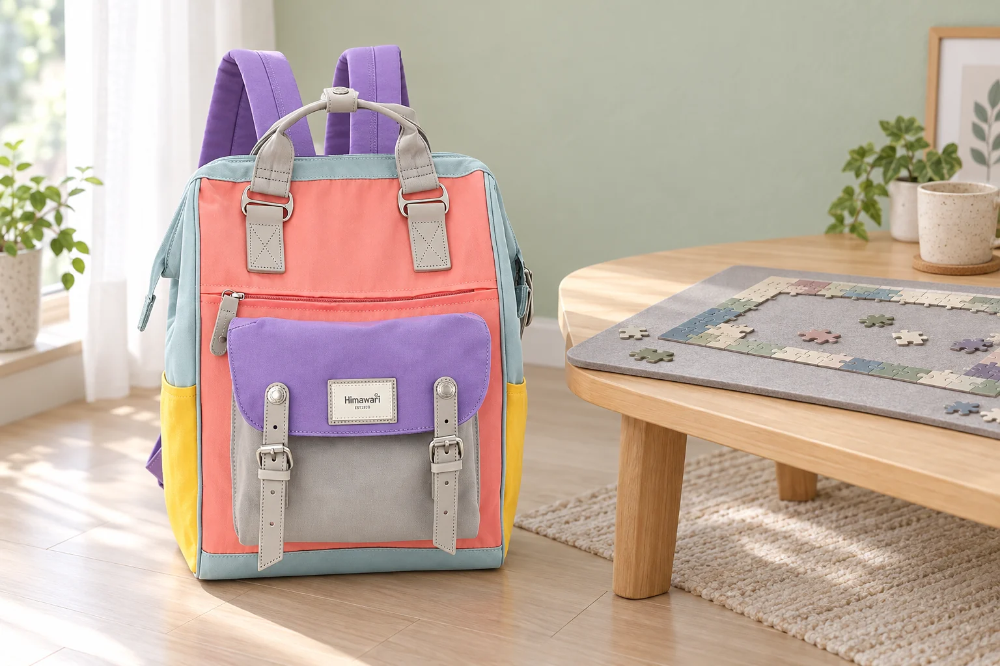

직소 퍼즐을 시작하기 전, 완성 크기만큼 자리를 비워두세요

퍼즐을 맞추기 시작한 뒤 식탁이 비좁아지면 자리를 옮기기도 번거롭습니다. 작은 상자에서 꺼낸 조각들이 다 맞춰졌을 때 어디까지 펼쳐질지 먼저 가늠해보세요. 포장에 적힌 완성 크기가 기준이 됩니다.
상자 치수와 완성 치수 구분하기
제품 상세에 여러 치수가 나와 있다면 무엇을 잰 숫자인지 확인합니다. 예를 들어 Ravensburger Krypt Silver 공식 상세는 상자 크기와 완성 크기를 따로 표시하고, 완성 크기는 70 × 50cm로 안내합니다. 이 숫자는 해당 퍼즐의 정보입니다. 가지고 있는 퍼즐은 그 제품의 상자나 공식 안내를 읽어주세요.
조각을 펼칠 여유도 남겨두기
완성 크기만큼의 사각형을 책상 위에 가늠해보고, 그 바깥에 아직 맞추지 않은 조각을 놓을 자리를 정합니다. 작은 쟁반이나 빈 상자 뚜껑을 쓰면 색이나 테두리 조각을 나눠둘 수 있습니다. 조각 수만 보고 판을 고르지 말고 실제 완성 크기와 판의 사용 가능한 면적을 비교하세요.
식탁을 다시 써야 한다면 판부터 준비하기
저녁에 같은 식탁을 써야 한다면 처음부터 평평한 작업판 위에서 맞춰보세요. 판을 둘 선반이나 빈 책상에도 자리가 있는지 확인합니다. 옮길 때 판이 휘거나 기울면 조각이 움직일 수 있으니, 퍼즐을 올리기 전에 빈 판을 들어보고 받칠 곳을 정해두는 편이 낫습니다.
첫날에는 테두리가 들어가는지 살펴보기
네 모서리와 테두리 일부를 맞춰 판의 가장자리와 얼마나 떨어져 있는지 봅니다. 판이 작다는 걸 알게 되면 많이 진행하기 전에 자리를 바꿀 수 있습니다. 음료는 작업판 밖에 두고, 자리를 정리할 때 떨어진 조각이 없는지 바닥과 의자 주변을 함께 살펴보세요.
참고·안내
- Himawari No.9018 제품 정보
- Ravensburger Krypt Silver 공식 제품 치수
- No.9018 퍼플의 실제 제품 원본과 카탈로그 외부 치수 28 × 40 × 17cm(가로 × 세로 × 폭)를 참고한 AI 연출 사진입니다. 퍼즐과 작업판은 가상의 소품이며 특정 퍼즐 제품이나 가방 수납 크기를 나타내지 않습니다. 치수는 측정 방식에 따라 차이가 있을 수 있습니다.
자주 묻는 질문
퍼즐 조각 수만 알면 판 크기를 고를 수 있나요?
해당 퍼즐의 완성 크기를 확인하세요. 판의 사용 가능한 면적과 비교하고, 맞추기 전 조각을 펼칠 자리도 따로 마련합니다.
식탁에서 시작한 퍼즐을 나중에 옮겨도 되나요?
처음부터 작업판 위에 놓으면 옮길 준비를 할 수 있습니다. 판이 휘지 않게 받칠 곳과 내려놓을 공간은 시작 전에 확인하세요.